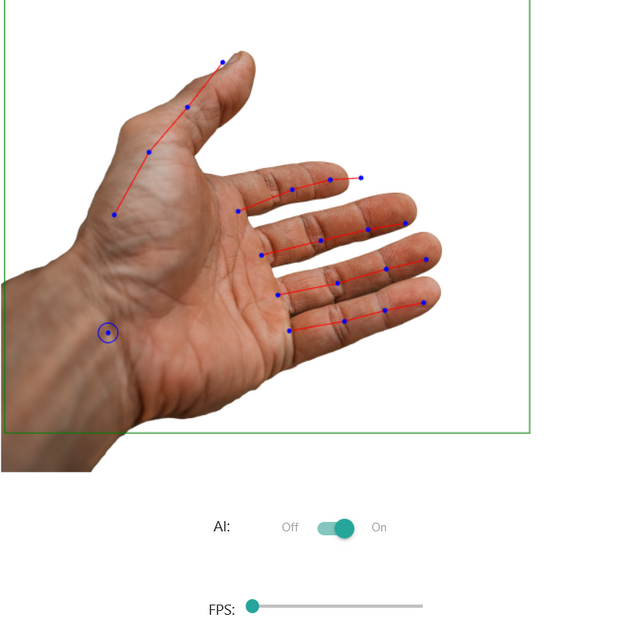
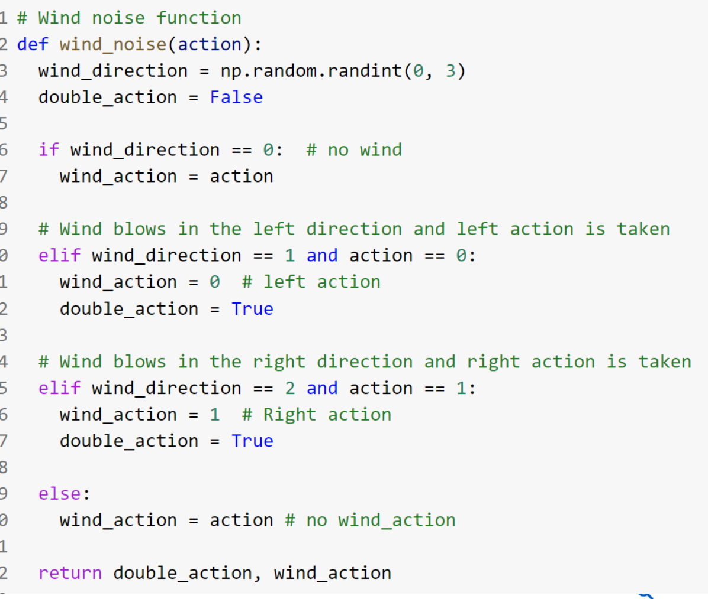
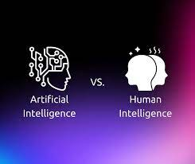
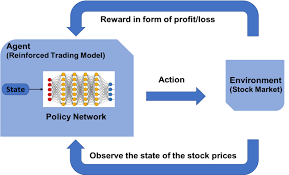
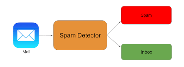
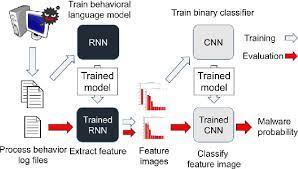

AI Hand Detection

This is a web AI hand detection. You can use it in your web browser. This web application uses the camera of your device to detect your hand.
Smart Glasses Project for blinf people

This project is for goal to help blind people to read text, get informations from the net, identify people faces and describe pictures using semantic sentences.
AI ChatBot
Conversational AI Model This project showcases my work on building a sophisticated Conversational AI model as part of my Artificial Intelligence assignment. Leveraging the power of TensorFlow and the tflearn library, I employed Natural Language Processing and Neural Network concepts to construct an AI contextual chatbot.
Facial Recognition and Data Logging System

Welcome to the Face Detection and Data Addition System! This robust solution is designed for detecting faces in video, verifying them against a predefined dataset, and updating a CSV file with relevant data.
Blockchain Project
This project explores the application of blockchain in open science, showcasing its potential as an infrastructure. The focus is on secure transactions using blockchain for financial transactions between friends.
Cardio Vascular disease Prediction

This C++ project implements an expert system for diagnosing cardiovascular diseases using backward and forward chaining inference mechanisms. Users can identify a disease based on symptoms and receive treatment recommendations for the diagnosed disease. The system provides an interactive and knowledge-driven approach to support decision-making in the field of cardiovascular health.
cryptocurrency-prediction
Predicting the crypto currency using Neural Network.
RL Algorithms with Real-World Uncertainties

Enhanced agent decision-making for Q-learning and ActorCritic algorithms by introducing real-world uncertainties such as wind noise and engine failures.
drowsiness Detection
Drowsiness Detector using Python. College Project with all Documents.
chatgpt Comparision

ChatGPT Comparison Detection Project Overview The ChatGPT Comparison Detection Project aims to develop a system that identifies and analyzes comparisons within text data. Leveraging the capabilities of ChatGPT, a state-of-the-art language model, this project offers a solution for detecting and understanding comparative statements.
Face Detection

Face Detecton In Python Using OpenCV.
Heart Failure Prediction
Heart failure is a critical medical condition that requires timely intervention. This project aims to predict heart failure in patients using machine learning algorithms. Early detection can lead to better patient care and outcomes.
Linkedin Clone

This project is a replication of the popular professional networking platform LinkedIn, aiming to emulate its features and functionalities.
Whatsapp GPT

WhatsApp-GPT WhatsApp-GPT is a project that integrates ChatGPT with WhatsApp using a Golang library. The setup involves running WhatsApp from a phone number using the Golang library and concurrently running a dedicated browser in another window to control ChatGPT.
Video Surveillance and tracking system using Facial Recognition

Connect all CCTV cameras to this system to track someone's live location in a premise using facial recognition. It can be also used to maintain records of people entering a premise using their face instead of bio-metrics/cards/manual Entry. This system when used with national criminal database can track criminals and prevent mishaps.
Solving reinforcement algorithms on environments

The objective of the project is to implement multiple reinforcement learning and analyze their performance, accuracy, dynamic reward graphs and hyperparameters on the gymnasium environments. The project also tests real world scenarios by introducing noise such as sensor noise, turbulence, and engine failure to the environment.
Stock market prediction using Reinforcement Learning

Trying out reinforcement agents to predict stock market for 3 interested companies.
Mask Detection
CNN IMPLEMENTATION (CONVOLUTIONAL NEURAL NETWORK) FOR MASK DETECTION (PYTHON + KERAS + FLASK + BOOTSTRAP).
Student login page
studentActivity
All Purpose Student Activity Website
Spam Mail Detector using ML

This project is a spam email detection system built using machine learning algorithms from scikit-learn. Spam emails can be a significant problem, and having an automated system to detect and filter them out can be invaluable.
Malware Detection using NNDL

Malware Detection Using Deep Learning Project with Code, PPT, Report and Documents.
Image Flask Apps
This project consists of two Flask applications that leverage ImageAI's image prediction algorithms and object detection models for object recognition and analysis in images and videos. The apps, Image Object Recognition Flask Application and Video Object Detection Flask Application, provide an intuitive platform for users to explore, analyze, and extract information from visual content.
Mini Chatgpt Model
minGPT is a PyTorch re-implementation of GPT, covering both training and inference. The primary goals of minGPT are to be small, clean, interpretable, and educational. Unlike some sprawling GPT implementations, minGPT maintains simplicity, with the entire codebase consisting of approximately 300 lines of code (refer to mingpt/model.py). The core concept involves a sequence of indices fed into a Transformer, producing a probability distribution over the next index in the sequence. The implementation focuses on clever batching, both across examples and sequence length, for efficiency.